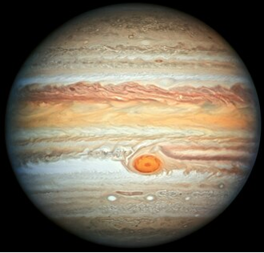
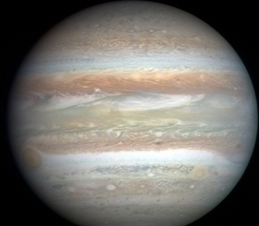
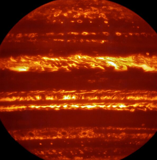

| Перигелий | 7,405736⋅10^8 км (4,950429 а. e.) |
| Афелий | 8,165208⋅10^8 км (5,458104 а. e.) |
| Большая полуось (a) | 7,785472⋅10^8 км (5,204267 а. e.) |
| Эксцентриситет орбиты (e) | 0,048775 |
| Сидерический период обращения | 4332,589 дня (11,8618 года) |
| Синодический период обращения | 398,88 дня |
| Орбитальная скорость (v) | 13,07 км/с (средн.) |
| Наклонение (i) | 1,304° (относительно эклиптики) 6,09° (относительно солнечного экватора) |
| Долгота восходящего узла (Ω) | 100,55615° |
| Аргумент перицентра (ω) | 275,066° |
| Чей спутник | Солнца |
| Спутники | 95 |
| Полярное сжатие | 0,06487 |
| Экваториальный радиус | 71 492 ± 4 км |
| Полярный радиус | 66 854 ± 10 км |
| Средний радиус | 69 911 ± 6 км |
| Площадь поверхности (S) | 6,21796⋅10^10 км² 121,9 земных |
| Объём (V) | 1,43128⋅10^15 км³ 1321,3 земных |
| Масса (m) | 1,8986⋅10^27 кг 317,8 земных |
| Средняя плотность (ρ) | 1326 кг/м³ |
| Ускорение свободного падения на экваторе (g) | 24,79 м/с² (2,535 g) |
| Первая космическая скорость (v1) | 42,58 км/с |
| Вторая космическая скорость (v2) | 59,5 км/с |
| Экваториальная скорость вращения | 12,6 км/с или 45 300 км/ч |
| Период вращения (T) | 9,925 часа |
| Наклон оси | 3,13° |
| Прямое восхождение северного полюса (α) | 17 ч 52 мин 14 с 268,057° |
| Склонение северного полюса (δ) | 64,496° |
| Альбедо | 0,343 (Бонд) 0,52 (геом. альбедо) |
| Видимая звёздная величина | от −1,61 до −2,94 |
| Абсолютная звёздная величина | −9,4 |
| Угловой диаметр | 29,8″—50,1″ |
| Атмосферное давление | 20—220 кПа |
| Шкала высоты | 27 км |
| 89,8±2,0 % | Водород (H2) |
| 10,2±2,0 % | Гелий (He) |
| ~0,3 % | Метан (CH4) |
| ~0,026 % | Аммоний (NH4+) |
| ~0,003 % | Дейтерид водорода (HD) |
| 0,0006 % | Этан (CH3−CH3) |
| 0,0004 % | Вода (H2O) |

Фотография Юпитера, сделанная 27 июня 2019 года с телескопа «Хаббл»

Вид Юпитера во весь диск в естественном цвете, с отбрасываемой на него тенью от его крупнейшего спутника Ганимеда и Большим красным пятном слева на горизонте

Фотография Юпитера в инфракрасном диапазоне